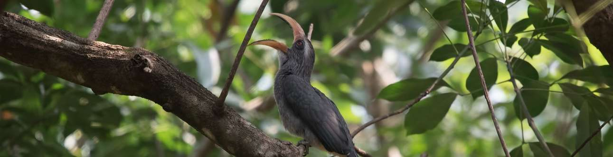

Kadalundi bird sanctuary

Kadalundi bird sanctuary
A cluster of scenic islands, beautiful hills and rare avian species would intrigue and entice every birdwatcher on the planet. This is exactly what the Kadalundi Bird Sanctuary has to offer its visitors. One is greeted by the Kadalundi River flowing into the Arabian Sea while migratory birds casually flit about.
This untouched land has over 60 species of migratory birds from across the planet that visits it during different times of the year. One can see seagulls, terns, sandpipers, sand plovers, red and greenshanks, turnstones and so on with November to April being the ideal viewing time. A small hill nearby gives you a panoramic view of the entire region. You can sit back and relax, with the odd otter peeking out at you playfully. This is indeed a paradise designed especially for bird lovers.